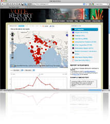

What's new?
Recent Projects
VoteReport India was launched in April 2009 to enable citizen-powered monitoring to track election irregularities during the 2009 General Indian Elections.
 FixOurCity was launched in June 2009 to promote effective local governance through increased citizen awareness and participation.
FixOurCity was launched in June 2009 to promote effective local governance through increased citizen awareness and participation.